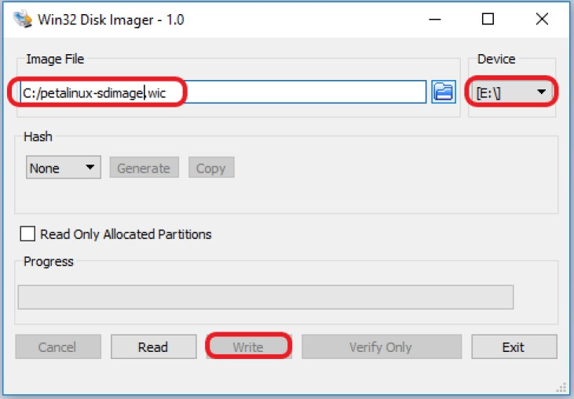
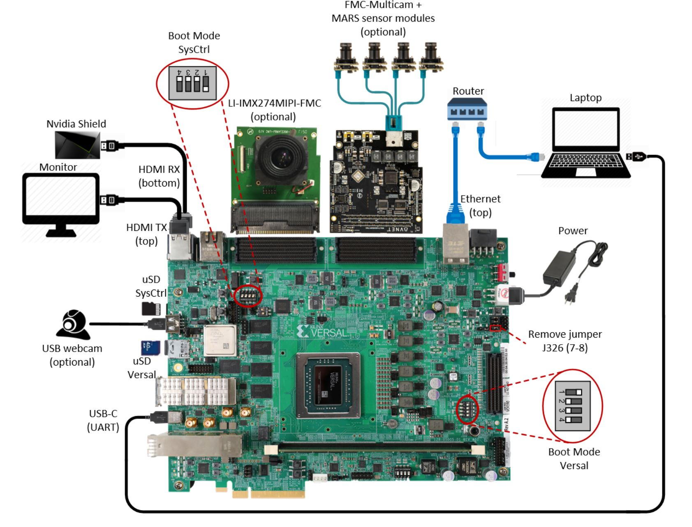
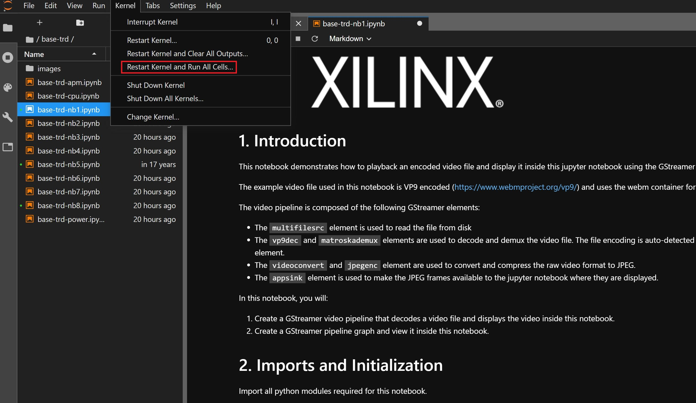

3. Run the Prebuilt Image¶
3.1. Prerequisites¶
Reference design zip file
Terminal emulator, for example
Windows: teraterm (https://osdn.net/projects/ttssh2)
Linux: picocom (https://github.com/npat-efault/picocom/releases)
Windows: Win32 Disk Imager utility (https://sourceforge.net/projects/win32diskimager)
Windows: 7zip utility (https://sourceforge.net/projects/sevenzip/)
3.2. SD Card Creation¶
The SD card image file is located at
$working_dir/sdcard/petalinux-sdimage.wic.gz.
Choose an unpartitioned SD card of size 8GB or greater for this demo. Use the
Win32 Disk Imager utility for Windows or ‘dd’ command line utility for Linux
to write the given raw disk image petalinux-sdimage.wic to the SD card.
After unzipping the image file petalinux-sdimage.wic.gz using the 7zip
utility on Windows, use the following steps to write a raw disk image to a
removable device using the Win32 Disk Imager utility.
Browse to the location of the unzipped image in the Win32 utility. In the ‘File name’ field, type
*.wic, otherwise only files with the.imgending file be shown. Alternatively, change the drop down menu on the bottom right from ‘Disk Images (*.img *.IMG)’ to ‘*.*’.Choose the correct SD card drive letter under ‘Device’
Select ‘Write’ to the SD card, click ‘Yes’ at the prompt to continue writing and wait till the operation is complete

{kind=link}
Steps to write a raw disk image to a removable device using dd command-line utility for Linux
Gunzip the given image file
petalinux-sdimage.wic.gzin linuxUse dd to write
petalinux-sdimage.wicto correct enumerated disk for SD card in the Linux machine:gunzip petalinux-sdimage.wic.gz sudo dd if=petalinux-sdimage.wic of=/dev/sdbx bs=1M
SD card partitions
Once the raw image is written to the SD card, you will be able to see two partitions. The first partition (FAT16 format) is the boot partition and it contains:
Xilinx OpenCL binary container (
binary_container_1.xclbin)Boot image (
BOOT.BIN)u-boot boot script (
boot.scr)Linux kernel image (
image.ub)
while in the second patition (ext4 format) resides the root file system.
Note: A Windows OS would only allow FAT16 partitions to be viewed whereas the ext4 format is not recognized.
3.3. Board Setup¶
The following figure shows how to set up the VCK190 evaluation board.
{kind=link}
Board jumper and switch settings
This is a onetime setup and the board should have been delivered to you with this default settings, but it is good to double check for the first time when you get the board.
Make sure you remove J326 (7-8) jumper.
Setup SYSCTRL Boot mode switch SW11 to (ON,OFF,OFF,OFF) from switch bits 1 to 4 as shown in the above picture.
Make sure you have the SYSCTRL uSD card inserted in the slot and card has the SYSCTRL image.
Setup Versal Boot Mode switch SW1 to (ON,OFF,OFF,OFF) from switch bits 1 to 4 as shown in the above picture.
FMC and Vadj settings
Platform 1 supports video capture from the Leopard IMX274 MIPI FMC, connect the FMC card to the FMCP1 slot (J51) as shown in the above figure. For more info on the FMC module, visit: https://leopardimaging.com/product/csi-2-mipi-modules-i-pex/li-imx274mipi-fmc/
Platform 2 supports video capture from Avnet Multi-Camera MIPI FMC Module. Connect the FMC card to the FMCP2 slot (J53) as shown in the above figure. For more info on the FMC module, visit: https://www.avnet.com/wps/portal/silica/products/new-products/npi/2018/avnet-multi-camera-fmc-module/
Perform the following steps to set the Vadj voltage rail to 1.2V using the BoardUI utility:
Download the BoardUI utility from the VCK190 Headstart lounge: https://www.xilinx.com/member/vck190_headstart/VCK190_BIT_Test_2020-04-03.zip
Extract the zip file and start the BoardUI tool. Make sure the USB-C cable is connected to your PC and the system controller Micro SD card is inserted.
In the BoardUI GUI, navigate to the FMC Boot Up tab following the red circles as shown in the below figure. Enter 1.2 in the Set On-Boot VADJ field and click the button next to it to save the value.

Power-cycle the board and navigate to the FMC Current tab. Click the Get VADJ_FMC Voltage button to read out the current voltage setting and confirm it matches the 1.2V set in the previous step.
Close the BoardUI utility.
Note
If Vadj does not persists after reboot, try updating the System Controller SD card image following the instructions in the linked pdf file. The image and instructions can be downloaded from the VCK190 headstart lounge. After updating the SD image, rerun the instructions for setting Vadj.
Serial console settings
VCK190 comes with a USB-C connector for JTAG+UART, when connected three UART ports should be visible in Device Manager:
Versal UART0
Versal UART1 &
System Controller UART
Connect a USB-C cable to the USB-UART connector. In the terminal emulator choose Versal UART0 and use the following settings:
Baud Rate: 115200
Data: 8 bit
Parity: None
Stop: 1 bit
Flow Control: None
3.4. Connect to the JupyterLab Server¶
Follow these steps to boot the board into Linux
Ensure all steps under the section ‘Board jumper and switch settings’ are verified.
Insert the prepared micro SD card into the Versal SD card slot (refer to the image VCK190 Board Setup)
Make physical connections to ethernet, HDMI, UART, webcam and power as shown in the image.
Have the UART0 terminal emulator tab connected.
Turn ON power switch SW13.
On Versal UART0 terminal, we would see the Versal device booting from the micro SD card starting with the message “Xilinx Versal Platform Loader and Manager”
In about 60 seconds boot is complete. Observe the Linux prompt root@xilinx-vck190-2020_1 and autostart of JupyterLab server as shown in the example below:
root@xilinx-vck190-2020_1:~# [I 17:36:24.640 LabApp] Writing notebook server cookie secret to /home/root/.local/share/jupyter/runtime/notebook_cookie_secret [W 17:36:26.084 LabApp] JupyterLab server extension not enabled, manually loading... [I 17:44:03.942 LabApp] JupyterLab extension loaded from /usr/lib/python3.7/site-packages/jupyterlab [I 17:44:03.942 LabApp] JupyterLab application directory is /usr/share/jupyter/lab [I 17:44:06.924 LabApp] Serving notebooks from local directory: /usr/share/notebooks [I 17:44:06.924 LabApp] The Jupyter Notebook is running at: [I 17:44:06.925 LabApp] http://192.168.1.77:8888/?token=06cfb958c61eb0581bb759f40e3a4c3a6252cef3b7075449 [I 17:44:06.925 LabApp] or http://127.0.0.1:8888/?token=06cfb958c61eb0581bb759f40e3a4c3a6252cef3b7075449 [I 17:44:06.925 LabApp] Use Control-C to stop this server and shut down all kernels (twice to skip confirmation). [C 17:44:06.949 LabApp] To access the notebook, open this file in a browser: file:///home/root/.local/share/jupyter/runtime/nbserver-658-open.html Or copy and paste one of these URLs: http://192.168.1.77:8888/?token=06cfb958c61eb0581bb759f40e3a4c3a6252cef3b7075449 or http://127.0.0.1:8888/?token=06cfb958c61eb0581bb759f40e3a4c3a6252cef3b7075449
Follow these steps to connect to the jupyter-server using Chrome browser on the laptop.
Note: This demo is tested with Chrome browser only.
Copy the generated URL with token on the prompt of Versal target and paste it to the browser address bar of the laptop, for example:
http://192.168.1.77:8888/?token=06cfb958c61eb0581bb759f40e3a4c3a6252cef3b7075449Note: If for any reason target fails to grab an IP address from the network, Jupyter server would fail to issue an URL. In such a case user is recommended to fix an IP address and restart the jupyter server as shown below:
/etc/init.d/jupyterlab-server stop /etc/init.d/jupyterlab-server start
To look up the jupyter server IP address and token on the target, run:
jupyter notebook list
3.4.1. Setting a private network¶
In case of a private network, user may have to assign a static address within the subnet of the host machine, this section can be skipped if you are using DHCP and not on a private network
Setting up a private network with target board and the host machine for Windows users:
Make a direct connection between the windows host machine and the target board using an ethernet cable
In windows, run command prompt as an admisntrator
Press Windows+R to open the “Run” box. Type “cmd” into the box. press Ctrl+Shift+Enter to run the command as an administratorRun ipconfig on the windows machine to list available ethernet adapters and set a static private ip
# A sample output after executing ipconfig # notice interface "Ethernet" has an auto address assigned with no Default Gateway ipconfig Ethernet adapter Ethernet: Connection-specific DNS Suffix . : Link-local IPv6 Address . . . . . : fe80::1d8d:ac40:ff9b:8d1%21 Autoconfiguration IPv4 Address. . : 169.254.8.209 Subnet Mask . . . . . . . . . . . : 255.255.0.0 Default Gateway . . . . . . . . . : # Set static ip address netsh interface ip set address name="YOUR INTERFACE NAME" static "IP_ADDRESS" "SUBNET_MASK" # Example netsh interface ip set address name="Ethernet" static 10.0.0.1 255.255.255.0
Set a private ip address for the target within the subnet of host machine and verify connectivity.
ifconfig eth0 10.0.0.2 netmask 255.255.255.0 # Perform a ping test to the host form the target ping -c 3 10.0.0.1
Setting up a private network with target board and the host machine for Linux users:
Make a direct connection between the Linux host machine and the target board using an ethernet cable
Run ifconfig on the Linux machine to list available ethernet adapters and set a static private ip
# Example to set an ip 10.0.0.1 to ethernet interface enp2s0: sudo ifconfig enp2s0 10.0.0.1 netmask 255.255.255.0
Set a private ip address for the target within the subnet of host machine and verify connectivity.
ifconfig eth0 10.0.0.2 netmask 255.255.255.0 # Perform a ping test to the host form the target ping -c 3 10.0.0.1
3.5. Run the Jupyter Notebooks¶
This TRD includes the following jupyter notebooks:
base-trd-nb1.ipynb: Demonstrates videoplayback of a file source in rootfs of the target to the Jupyter notebook using the GStreamer multimedia framework.
base-trd-nb2.ipynb: Demonstrates streaming video from a v4l2 device on the target to the Jupyter notebook using the GStreamer multimedia framework
base-trd-nb3.ipynb: Demonstrates streaming video from a v4l2 device on the target to a HDMI monitor using the GStreamer multimedia framework.
base-trd-nb4.ipynb: Demonstrates two simultaneous streaming pipelines, one from file source and another from a v4l2 device onto two individual planes of a HDMI monitor using the GStreamer multimedia framework.
base-trd-nb5.ipynb: Demonstrates streaming video from a Mulit-Camera FMC module on the target to a HDMI monitor using the GStreamer multimedia framework.
base-trd-nb6.ipynb: Demonstrates the 2D filter accelerator kernels, both the PL and the AIE versions, inserted into the video pipeline of notebook 2.
base-trd-nb7.ipynb: Demonstrates using both 2D filter accelerator kernels in a time-multiplexed fashion in a multi-branch pipeline.
base-trd-apm.ipynb: Demonstrates how to plot the memory bandwidth while a video pipeline is running using the libxapm library with python bindings.
base-trd-cpu.ipynb: Demonstrates how to plot the CPU usage while running applications and pipelines.
base-trd-power.ipynb: Demonstrates how to plot power consumption of multiple voltage rails throughout the board.
Note: MIPI sources in the notebook is platform specific, User is allowed to choose “mipi” in platform 1 and “mipi_quad” in platform 2 respectively, otherwise an exception would be thrown.
To run the notebooks, follow the below steps:
On the left pane of the browser, 7 notebooks are available under the folder Base TRD.
Double click to open the notebook
Select ‘Kernel’ → ‘Restart Kernel and Run All Cells’ from the top menu bar to run the demo. For nb1, nb2 and nb6 scroll down to the end of the notebook to see the video output. For all other notebooks the video output is displayed on the monitor.
Click the rectangular icon to interrupt the kernel and stop the video stream.
Select ‘Kernel’ → ‘Shutdown Kernel’ → close the notebook tab and move to the next notebook.

{kind=link}